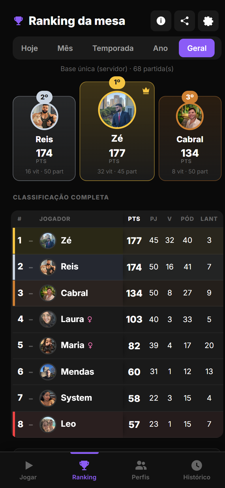
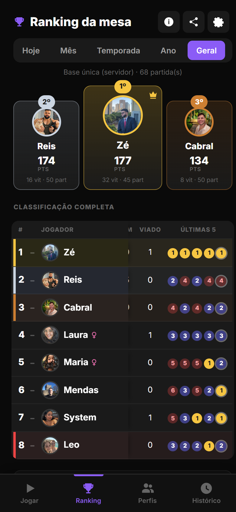
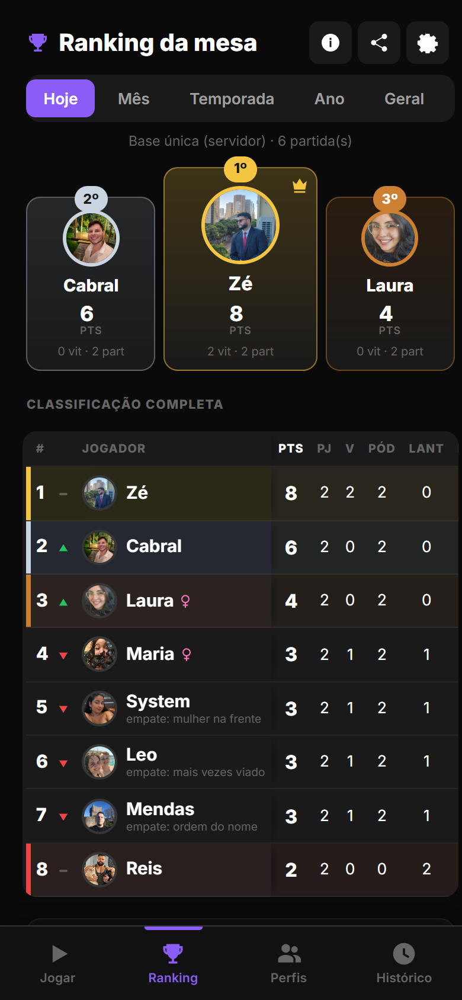
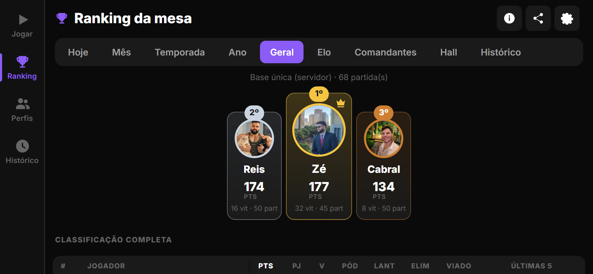
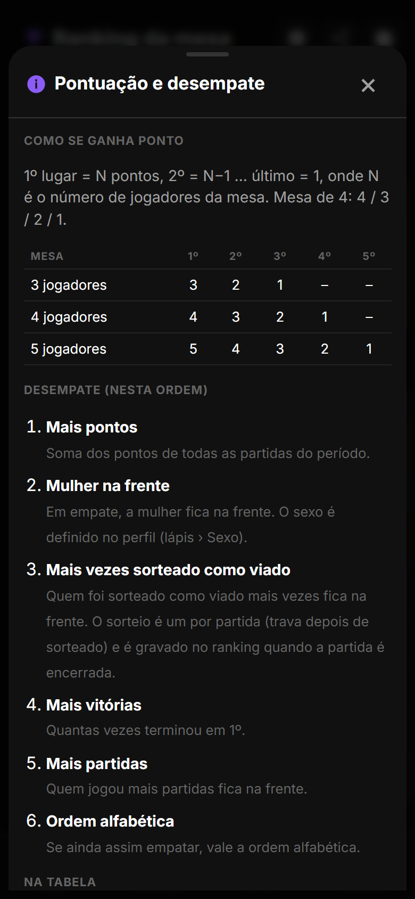
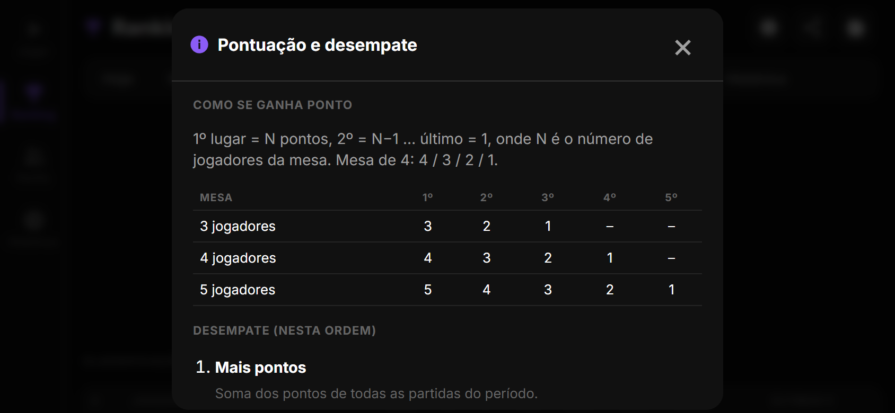
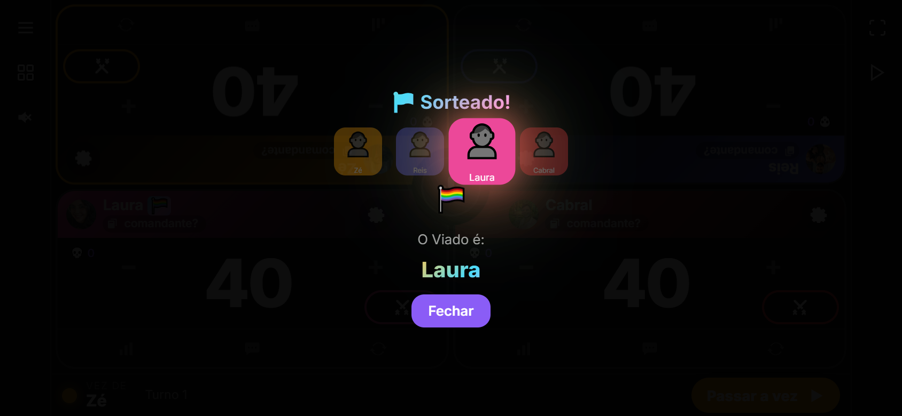
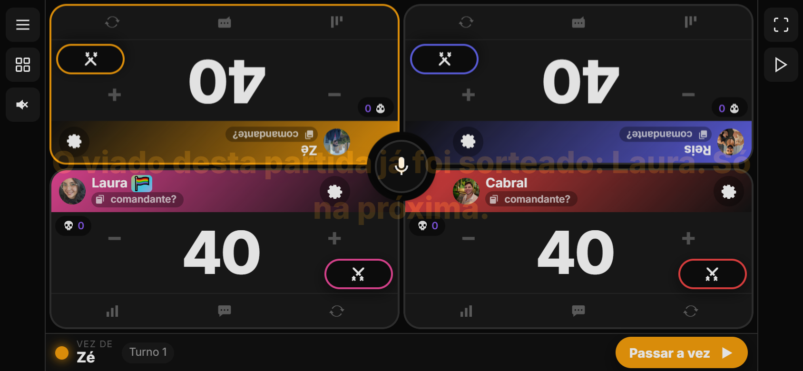
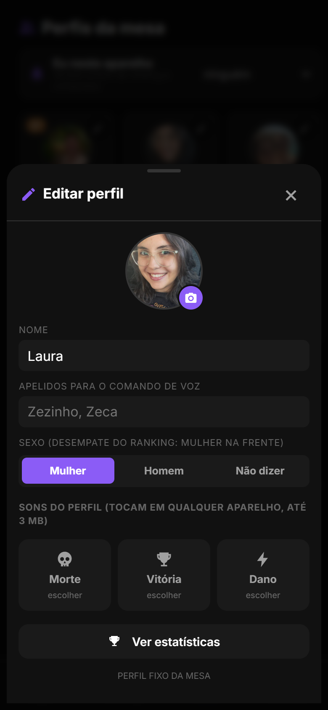
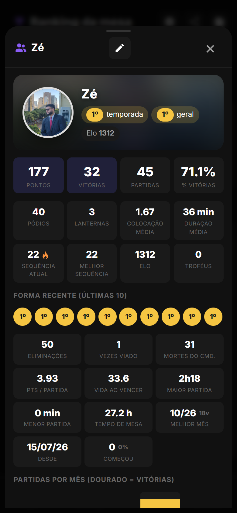

O ranking virou tabela de campeonato, no estilo do Brasileirão: pontos, partidas, vitórias, pódios, lanternas, eliminações, vezes sorteado como viado e a forma das últimas cinco, com legenda embaixo e um botão de informação explicando a pontuação e o desempate. O desempate ganhou dois critérios novos, nesta ordem: mulher na frente e depois quem foi sorteado como viado mais vezes. Pra isso o sorteio do viado passou a ser um por partida (trava depois de sorteado) e é gravado no ranking ao encerrar. O perfil ganhou o campo Sexo.
A "Classificação completa" era uma lista com nome, "V vitórias · P partidas · %" e os pontos. Agora é uma tabela de verdade, com as colunas de uma tabela de campeonato e o pódio continuando em cima. A aba Temporada mantém o resumo (líder, prêmios, corrida de pontos) e ganha a mesma tabela.




Embaixo da tabela entrou a legenda das siglas, a regra da pontuação em vigor ("1º = N, 2º = N−1 … último = 1", ou "só vitória vale", "pódio 3/1", "Elo") e os critérios de desempate na ordem. No cabeçalho do ranking, ao lado de compartilhar e da engrenagem, o botão i abre a janela "Pontuação e desempate", com a tabela de exemplo por tamanho de mesa e a explicação de cada critério.


A ordem de desempate agora é:
Como o sorteio passou a valer ponto de desempate, ele trava: depois de sorteado numa partida em andamento, o botão vira "Viado sorteado (1 por partida)", o "Sortear Novamente" some e um novo toque (ou o comando de voz) só avisa quem foi. Nova partida ou reset destrava. Ao encerrar a partida, o sorteado vai marcado na colocação dele e passa a contar na coluna Viado e no desempate.


Na folha de edição do perfil (lápis) entrou o seletor Sexo: Mulher, Homem ou Não dizer. Laura, Maria e System já vêm como Mulher; os outros perfis fixos como Homem. A página do perfil mostra o símbolo ao lado do nome e o contador "vezes viado" junto das eliminações.


| Onde | O que mudou |
|---|---|
| Backend | Migração 0005: Profile.gender ('', f, m) e MatchPlacement.viado. _aggregate devolve gender, viado_count, kills, losses, form (últimas 5) e tie (critério que separou da linha de cima); _rank_key ordena por pontos › mulher › viado › vitórias › partidas › nome (ou vitórias primeiro, conforme a configuração). GET /api/ranking/ devolve criteria e prev_rank (posição antes da última partida). Perfil aceita gender no POST/PATCH; profile_stats devolve viado_count. Seed preenche o sexo dos perfis fixos só quando está vazio. Testes tests_lote8.py (6 novos, 39 no total). |
| App | GameState.isViadoLocked(); sortearViado() não sorteia com a partida rolando e alguém já sorteado; applyViado em ranking.ts marca a colocação; viado no payload da partida. Ranking: rankingTableHtml, rankingLegendHtml, openRankingInfo; botão #ranking-info. Perfil: seletor de sexo (updateProfile({ gender })), ícones ic-info e ic-female. |
| Testes | QA qa16.mjs: sorteio trava e grava (viado na colocação salva, só um por partida, nova partida destrava), empate decidido por sexo e por viado nas partidas de hoje, tabela com as 10 colunas em pé e deitado, coluna fixa ao rolar, "empate: …" nas linhas, janela de informação com 6 critérios, toque na linha abre o perfil, sexo salvo pelo seletor. Suítes anteriores sem regressão; zero erros de JS. |
Como atualizar. No Android, o app avisa ao abrir e instala com um toque (ou Configurações › Atualização). No navegador basta recarregar.